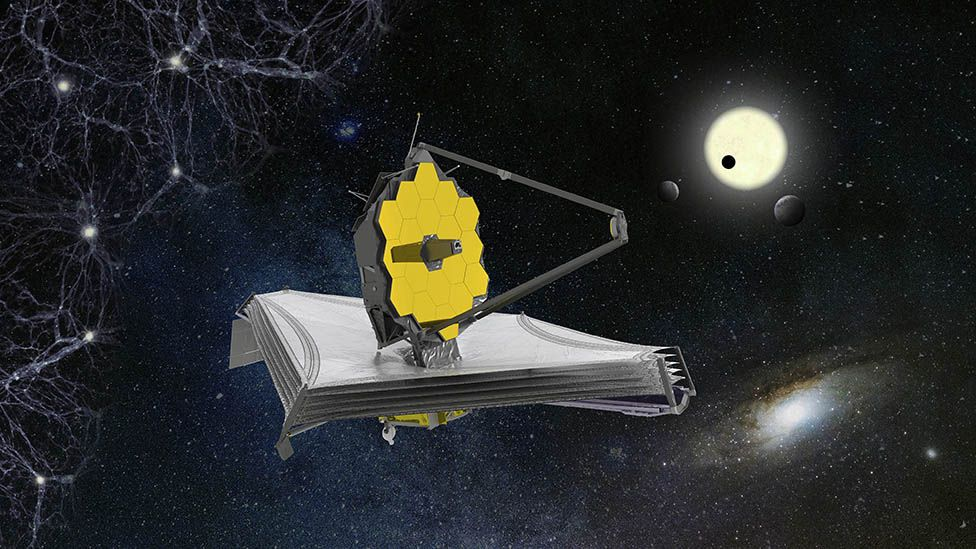

places must visit

prithvi cafe
i had visited in dec 2018
Quaint little restaurant tucked inside a by-lane of Juhu. Blink and you will miss the entrance to the cafe. So be alert enough to spot the black signboard that says "Prithvi cafe" while you are on the main road. The restaurant has a reasonably good menu at reasonable prices. The food is delicious, the servings are quite large and some dishes can be shared by 2 people. Attracts quite a trendy crowd of aspiring celebrities on show days. Be sure to book in advance to avoid disappointments. On other days, the crowd there is pretty hep & happening. Hosts the famous "Prithvi theater fest", which you must attend if possible.

jantar mantar - jaipur
i had visited in feb 2019
It's a wonderful place. Must visit this place. Must haired tour guide so it will be batter to under stand all the things. It is a beautifully maintained small complex with yellow painted walls. It's a historical site famous among tourists. It contains a number of different devices that were used to measure time in different eras in the Indian history. It has a nominal ticket price of ₹15 for Indians but about ₹225-250 for foreigners. Nice place to visit. We had an incredible experience visiting this observatory and seeing the accuracy of the astronomical instruments built around 300 years ago

yiga choeling monastery
i had visited in oct 2019
One of the oldest Monastery in Darjeeling. It is situated in peaceful and beautiful landscape just 15 minutes walk from Ghoom Railway Station. We can see religious God and Goddess paintings believed by Buddhism inside which can give spiritual power to one who prays there with clean heart. From the compound of Monastery on a clear day one can have a scenery of hills all around which is great for nature lovers.
review on the movies

It's a satisfying end to a chapter of blockbuster...
It's a satisfying end to a chapter of blockbuster history that will be hard to top for pure spectacle. In terms of sheer entertainment value, it's on the higher end of the MCU, a film that elevates its most iconic heroes to the legendary status they deserve and provides a few legitimate thrills along the way.

just enough adventure and magical elements...
“Frozen 2” has just enough adventure and magical elements in it to keep kids entertained and happy. Whether or not adults are going to enjoy this movie is honestly going to depend on if they can overlook some of the slow and boring moments and childish humor, which is most likely why the film has caused such a divide.
news about enviorment
-
What is the James Webb Space Telescope and when will it launch?
The telescope will be able to see just about anything in the sky. However, it has one overriding objective - to see the light coming from the very first stars to shine in the Universe.
These pioneer stars are thought to have switched on about 100-200 million years after the Big Bang, or a little over 13.5 billion years ago.
Webb will be picking out groupings of these stars. They are so far away, their light - even though it moves at 300,000km (186,000 miles) per second - will have taken billions of years to travel the cosmos.
It should be possible for Webb to see (or least detect a faint glow from) the moment when the darkness ended and those first stars flickered into life. -
A year 7 at HBHS got covid with 68 other kids in close contact
The telescope will be able to see just about anything in the sky. However, it has one overriding objective - to see the light coming from the very first stars to shine in the Universe.
These pioneer stars are thought to have switched on about 100-200 million years after the Big Bang, or a little over 13.5 billion years ago.
Webb will be picking out groupings of these stars. They are so far away, their light - even though it moves at 300,000km (186,000 miles) per second - will have taken billions of years to travel the cosmos.
It should be possible for Webb to see (or least detect a faint glow from) the moment when the darkness ended and those first stars flickered into life.